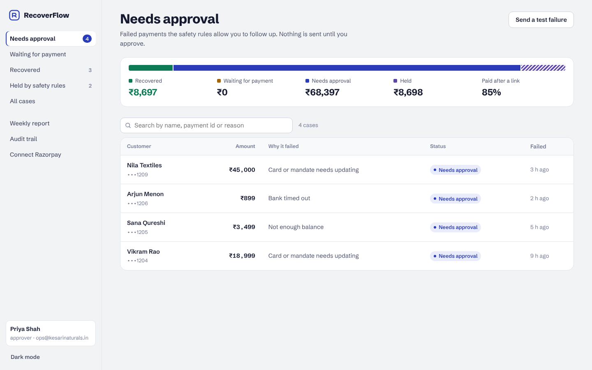

A failed payment is a customer who wanted to buy.
RecoverFlow reads every failed Razorpay payment, tells you why it failed, and sends that customer one payment link when you say so. You pay 8% of what comes back, and nothing if nothing does.
- Runs on your own Razorpay account
- Nothing is sent until you approve it
- No plugin to install on your store
- Why it failed The bank timed out. Ananya has paid you by UPI before.
- 10:42 am You approved one payment link.
- 12:58 pm Ananya paid. The case closed itself.
How much is waiting for you?
Many Indian stores see 5 to 15% of payment attempts fail. To find your number, open Razorpay, go to Transactions, then Payments, and filter by Failed.
Could come back each month
₹0
- Failing each month
- ₹0
- RecoverFlow fee, 8%
- ₹0
- You keep
- ₹0
How it works
-
Connect Razorpay
Add one webhook and an API key in your Razorpay dashboard. It takes about ten minutes, and the pilot includes a call where we do it together.
-
See why each payment failed
Bank timeout, low balance, expired card or mandate. Possible duplicates, open disputes and customers who have not agreed to be contacted are held back automatically.
-
Approve one link
Razorpay texts and emails the payment link from your account. When the customer pays, the case closes and the money shows in your weekly report.

You stay in charge of every message.
A bad follow-up costs you a customer. RecoverFlow is built to send fewer messages, not more.
- Nothing goes to a customer until someone on your team approves it.
- One link per failed payment. Never a second reminder.
- No message to customers who have not agreed to be contacted.
- Possible duplicate charges, open disputes and unclear failures wait for a person.
- Every approval is logged with the name of whoever approved it, in a record that shows if anything is edited later.
- It starts in Razorpay test mode. Live payments only after you switch them on.
Pricing
8%
of the money that comes back through a RecoverFlow link
- Free for the first 30 days
- No setup fee and no monthly fee
- Nothing to pay if no customer pays
- Stop any time by removing the webhook
Start a free 30-day pilot
I'm Karthik, and I build RecoverFlow in Hyderabad. During the pilot I set it up with you on a short call and go through the first week of cases with you.
Taking five pilot stores this month.
Thanks. I'll message you within a day.
Meanwhile, the live demo shows exactly what you'll see.
Questions
Will my customers feel spammed?
No. Each failed payment gets at most one link, and only after you approve it. Customers who have not agreed to be contacted get nothing.
What does the customer receive?
A standard Razorpay payment link by SMS and email, sent from your Razorpay account with your business name. They pay the same way they tried to before.
Does RecoverFlow touch my money?
No. Customers pay you through Razorpay, and the money settles to your account as usual. RecoverFlow only sees the payment events and sends you an invoice for 8% once a month.
What if the customer already paid another way?
Close the case without contacting them. Nothing is sent and nothing is charged.
Does it work with Shopify or WooCommerce?
Yes, if your checkout uses Razorpay. RecoverFlow sees every payment that reached Razorpay and failed. Carts abandoned before the payment step are not visible to it yet.
Is customer data safe?
Every webhook is checked against your Razorpay signature, viewers only see masked phone numbers and emails, and you can run RecoverFlow on your own server. The code is open on GitHub.